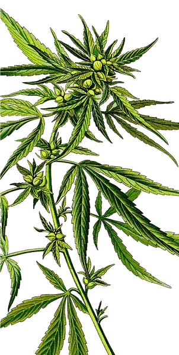
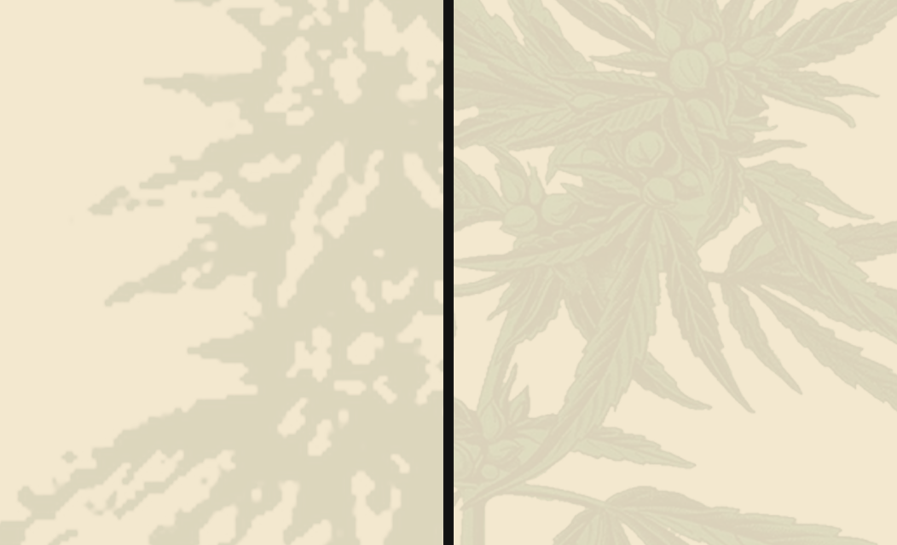

heute im Theme · 260 × 360 px · bei DPR2 5,11× hochskaliert
neu · 453 × 900 px, farbgleich getönt · bei DPR2 2,04×, 3,7× mehr Kanten
Aus dem Kundenflyer geschnitten, nicht nachgezeichnet: Alpha-Freisteller, ein zusammenhängendes Motiv, keine Papierreste, kein QR-Kasten, keine weiße Kante. Das ist die Datei, die den Kupferstich-Platzhalter in der Flora-Ebene ersetzt — ohne Code, nur über die Einstellung.
multiply, 10 % — die Pflanze liegt im Grund, nicht davor.
soft-light, 60 % — multiply würde sie hier hineinrechnen.

